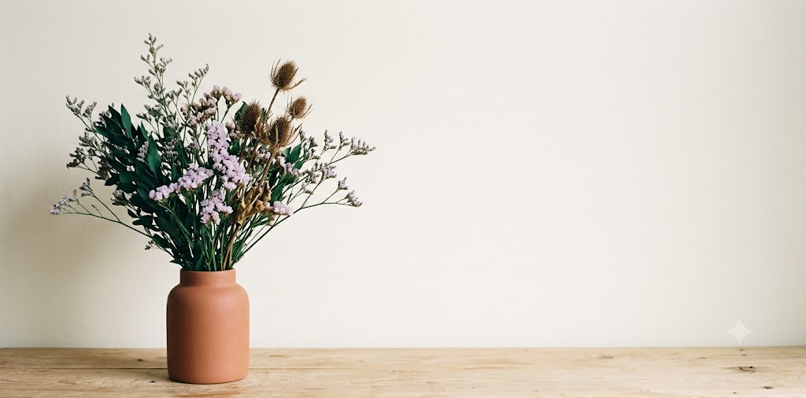
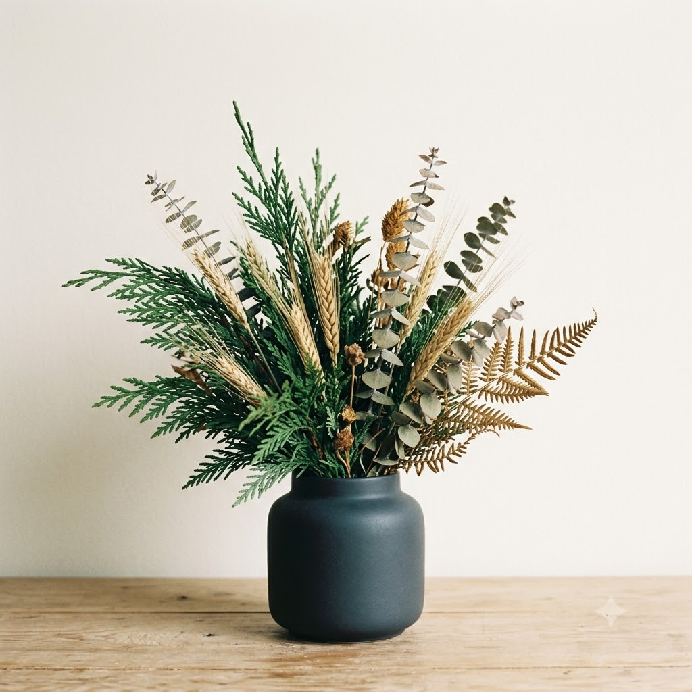

Winter arrivals from Northwind Botanicals. Three new arrangements, direct from Pacific Northwest farms working through the storm season.
 | |
Late winter arrivals
| |
New winter arrivals from Northwind Botanicals: three arrangements from farms working through the wet season. Small batches. Direct shipping.
| | See what's shipping | | |
 | | The Foreman | | Cedar tips, wheat, dried eucalyptus. $58. |
| | The Salt Marsh | | Sea lavender, statice, thistle. $62. |
|
| Northwind Botanicals
1215 SE Ankeny Street, Portland, OR 97214
| View in browser
•
Update preferences
•
Unsubscribe
Northwind Botanicals, Inc. 1215 SE Ankeny Street, Portland, OR 97214. A fictitious brand used as sample content in an open-source HTML email compatibility framework. See github.com/dcondrey/html-email for details.
|
|